Digitally Controlled Buck Converter
Overview
Designed and built a digitally controlled synchronous DC-DC buck converter with a UART-programmable output voltage. A Nucleo-G431KB runs bare-metal C firmware that generates a 200 kHz PWM signal, reads output voltage and inductor current via ADC with DMA, and runs a PID control loop at 10 kHz to maintain a user-set target voltage from 1.8 V to 10 V.
The power stage is a synchronous buck converter topology: an IR2104 half-bridge gate driver switches both a high-side and low-side IRLZ44N N-channel MOSFET, with the low-side device replacing the freewheeling diode to reduce conduction losses. A 47 µH power inductor and output filter capacitors smooth the switched waveform. An INA180A2 current sense amplifier (50 V/V gain) across a 20 mΩ shunt monitors output current; output voltage is scaled through a 27 kΩ / 10 kΩ resistor divider for the STM32 ADC. The full design was laid out in Altium Designer and simulated in LTspice before fabrication.
System Architecture
The design is split into two subsystems: a control subsystem (MCU, gate signal path, current sense) and a power subsystem (switching stage, protection).
Control
STM32G431KB MCU
200 kHz PWM, ADC+DMA feedback, 10 kHz PID ISR, UART command interface, bare-metal C on Nucleo-G431KB
Gate Drive
IR2104 Half-Bridge Driver
Bootstrap gate driver for high and low-side MOSFET drive from a single PWM signal
Power Stage
IRLZ44N MOSFETs + LC Filter
High-side (Q1) + low-side (Q2) IRLZ44N synchronous pair, 47 µH inductor, 220 µF + 100 nF output capacitors
Sensing & Protection
INA180A2 + TVS Diode
INA180A2 (50 V/V) across 20 mΩ shunt for output current sensing; TVS diode on 12 V input rail for protection
Schematics & PCB
{kind=link}
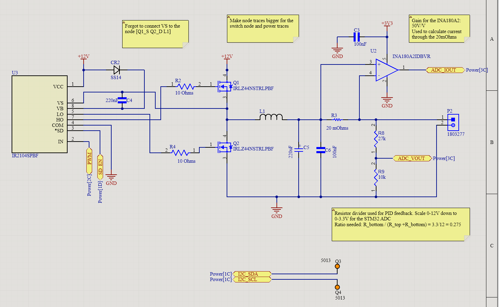
{kind=link}
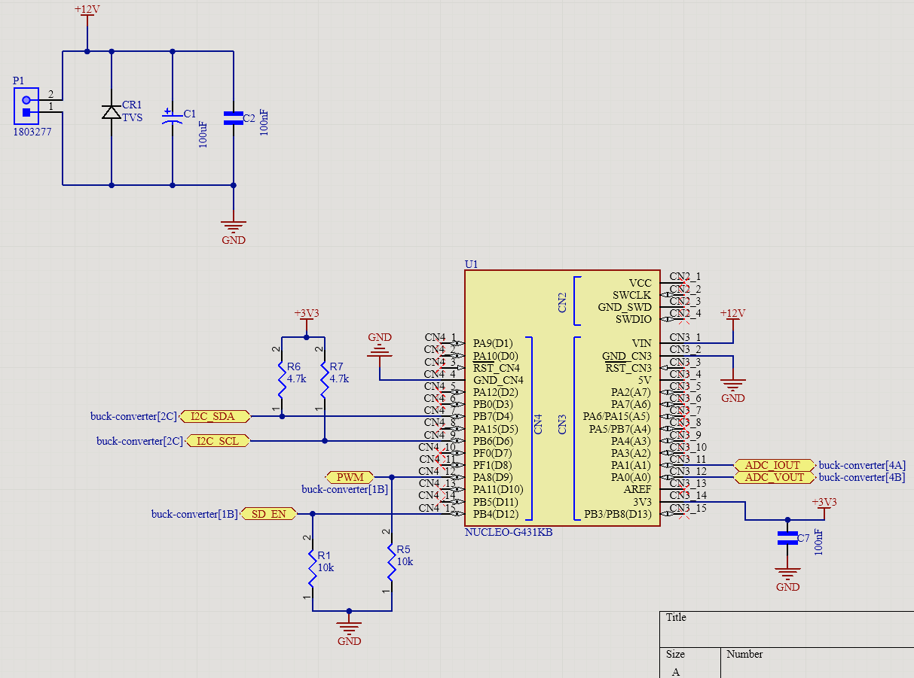
{kind=link}
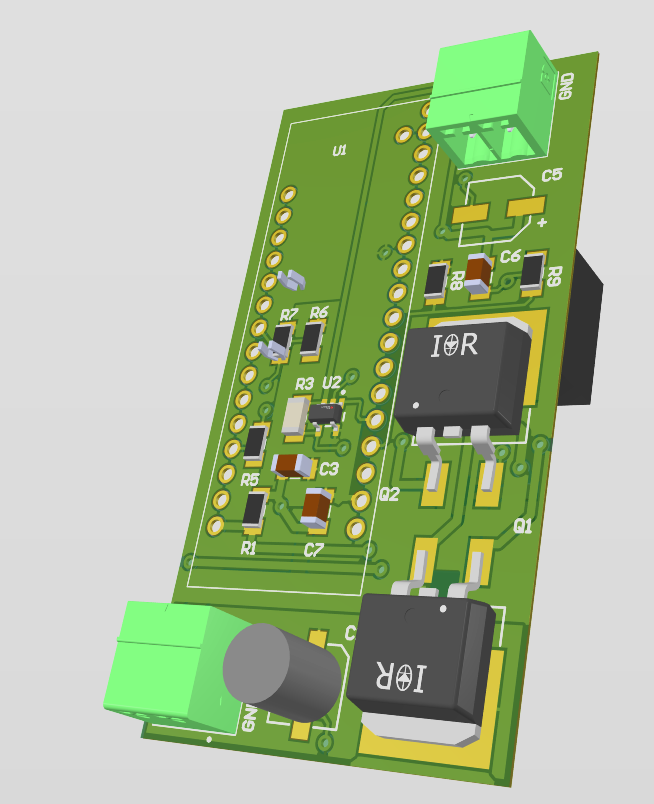
{kind=link}
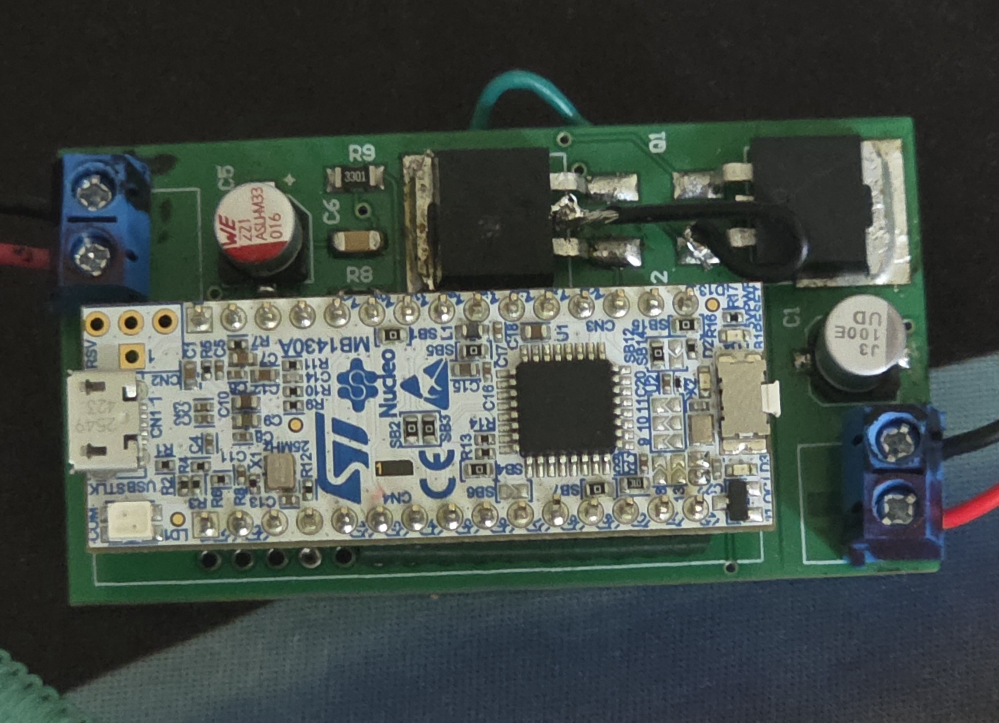
{kind=link}
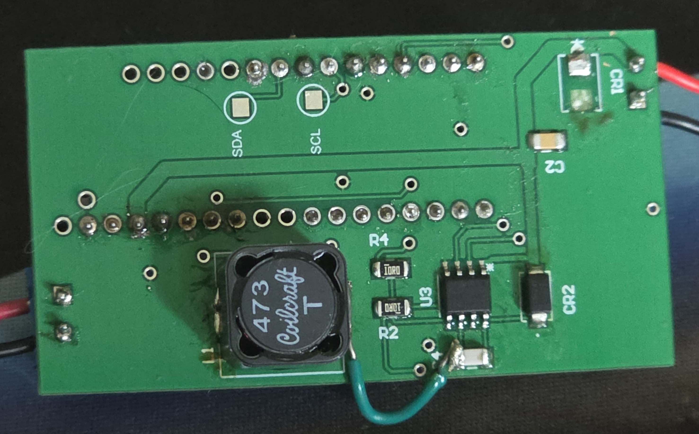
Firmware
Bare-metal C targeting the STM32G431KB at 170 MHz. Every peripheral is configured by direct register writes. The control loop runs entirely inside a TIM6 interrupt at 10 kHz . The main loop handles only UART commands and telemetry.
PWM: 200 kHz on PA8
A single PWM signal drives the IR2104 IN pin. The gate driver internally generates the complementary HO/LO outputs. Duty cycle is clamped in firmware to 15–83%, corresponding to Vout = 1.8 V at D = 15% and Vout = 10 V at D = 83%.
ADC + DMA: Continuous Dual-Channel Sampling
ADC1 scans two channels in circular DMA mode at ~42.5 MHz ADC clock. The DMA buffer is always fresh.
- PA0 (ADC_VOUT): output voltage via 27 kΩ/10 kΩ divider → scaled by ratio 0.270
- PA1 (ADC_IOUT): INA180A2 output → scaled by 0.020 Ω × 50 V/V = 1.0 V/A
PID Control Loop: 10 kHz ISR
Position-form PID runs every 100 µs inside TIM6_DAC_IRQHandler. The output is a duty-cycle value written directly to the PWM timer compare register.
- Default gains: Kp = 0.8, Ki = 120, Kd = 0.0002 . Can be tuned live via UART without reflashing
- Anti-windup: integral accumulator clamped to duty cycle limits every tick, preventing overshoot during startup or load steps
- Soft-start: internal shadow setpoint ramps at 0.5 mV/tick from 0 V to the target on enable
- Overcurrent fault: if ADC_IOUT exceeds 3.2 A, the ISR immediately pulls SD_EN low and latches a fault flag. Recovery requires sending
STARTover USART
UART Interface: Setpoint & Telemetry
USART2 appears as a virtual COM port via the Nucleo ST-Link at 115200 baud. Commands are parsed from a 64-byte ring buffer ISR.
LTspice Simulation
The full synchronous buck power stage was simulated in LTspice before PCB layout to verify gate drive, complementary switching, and output voltage regulation.
{kind=link}
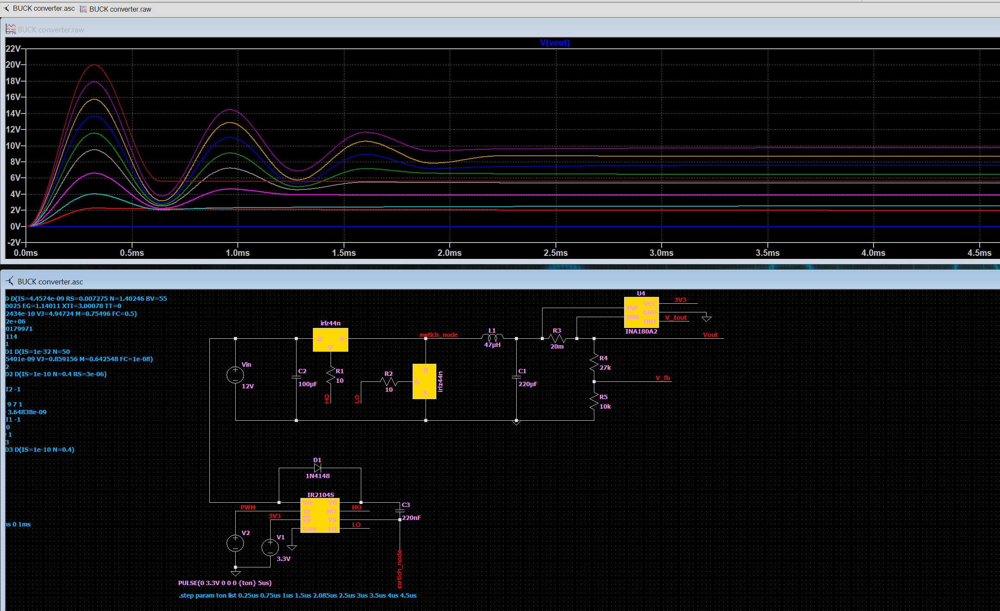
- Output voltage settles toward 5 V at D = 41.7% with Vin = 12 V
- bootstrap cap increased 100 nF --> 220 nF, gate resistors reduced 22 Ω --> 10 Ω
Lab Results & Measurements
The converter was tested on the bench with a 12 V DC supply and a resistive load and a signal generator for the pwm input. Output voltage was measured with an oscilloscope at both DC level and AC ripple.
{kind=link}
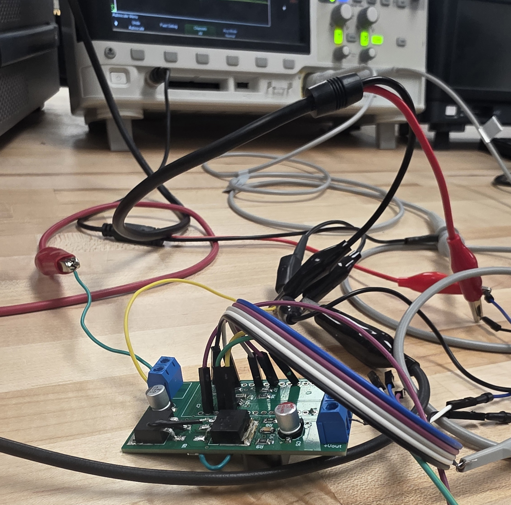
{kind=link}
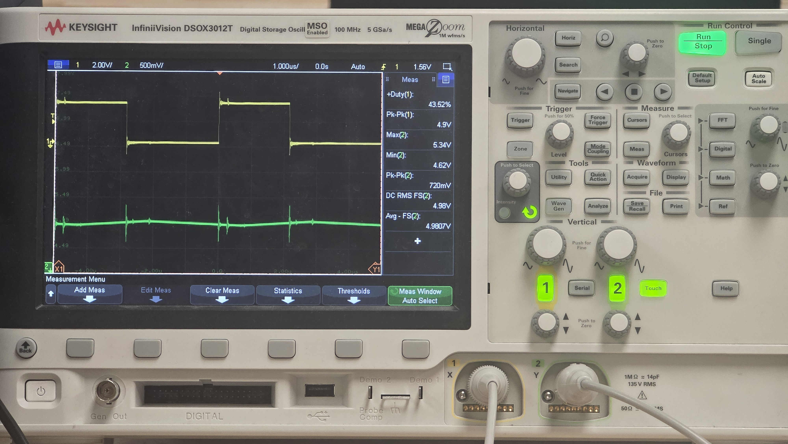
{kind=link}
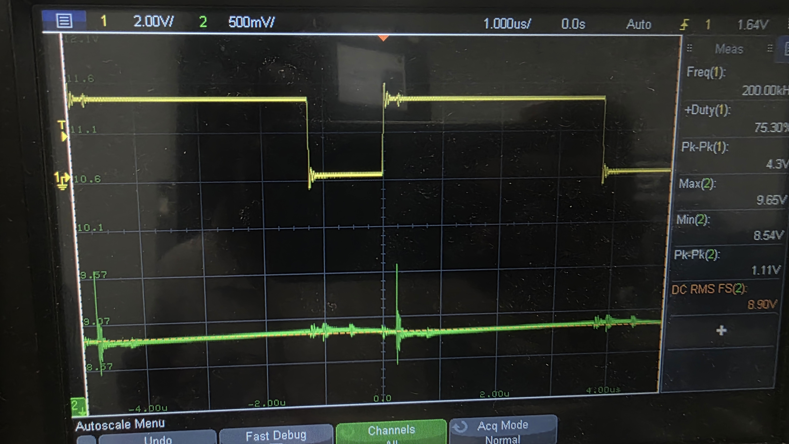
{kind=link}
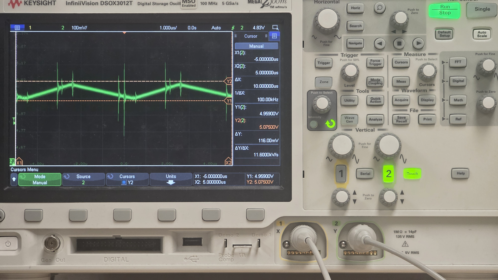
Challenges & Potential Improvements
VS Pin Not Connected to Switch Node
A schematic oversight left the IR2104's VS pin unconnected to the switch node. Without VS tied to that node, the bootstrap capacitor cannot charge correctly and high-side gate drive is unreliable. This was caught during bring-up pushing when I noticed that the switching node traces burned. Fixed in Altium, but on the bench just tied VS to the switch node with a jumper wire to get the converter running.
Switching Noise & Ringing
Ringing appeared on the switch node at each transition. Damped sinusoidal oscillations caused by parasitic trace inductance resonating with MOSFET output capacitance.
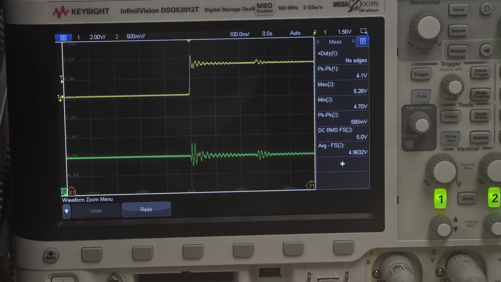
Gate resistors (10 Ω) partially mitigate the ringing by slowing the switching edge, trading efficiency for lower EMI.
Potential Improvements
- Reduce output ripple: Measured ripple exceeds the <50 mV design target. Adding a larger output capacitor or a higher-inductance value would reduce ripple amplitude; alternatively, increasing switching frequency reduces inductor current ripple directly.